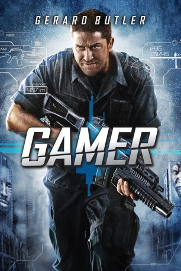
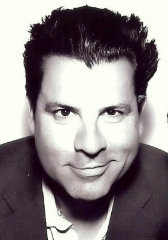
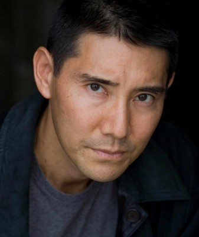
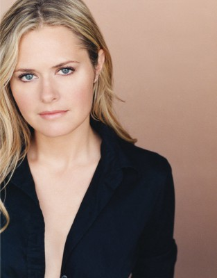

#830 Gamer
 
 IMDB-Wertung: 5.8 / 10
IMDB-Wertung: 5.8 / 10  Metascore: 27
Metascore: 27 
Was, wenn ein Spiel grausame Wirklichkeit wird? Milliardär Ken Castle (Michael C. Hall) ist Erfinder von "Slayers", einem perfiden Online-Game, in dem zum Tode Verurteilte zu realen Spielfiguren werden. In riesigen Wettkampfzonen treten sie als moderne Gladiatoren auf Leben und Tod an. Von Spielern fremdgesteuert, kämpfen sie gegen ihren Willen und ohne Kontrolle über das, was sie tun. Kable (Gerard Butler) ist unangefochtener Held der Arena. Von dem Teenager Simon kontrolliert und von Millionen von Zuschauern weltweit live verfolgt, hat er das tödliche Spiel am längsten überlebt. Doch um sein Leben und auch das seiner Frau Angie (Amber Valletta) und seiner Tochter zu retten, muss er Castles Spiel entkommen. Als die Untergrundbewegung "Humanz" zu Kable Kontakt aufnimmt, scheint es endlich einen Ausweg aus dieser Hölle zu geben...
Jahr: 2009
Dauer: 95 Minuten
FSK: 18
Land: USA Studio: LionsgateTonspuren: DTS - ,
Untertitel:
Auflösung: 1080p (1920x1032) Größe: 7311 MB
Genre: Action, Sci-Fi, Thriller
Regisseur: Mark Neveldine, Brian Taylor
Drehbuch: Mark Neveldine, Brian Taylor
Soundtrack: Robbie C. Williamson, Geoff Zanelli
Darsteller:
 Gerard Butler als Kable
Gerard Butler als Kable Amber Valletta als Angie
Amber Valletta als Angie Michael C. Hall als Ken Castle
Michael C. Hall als Ken Castle Kyra Sedgwick als Gina Parker Smith
Kyra Sedgwick als Gina Parker Smith Logan Lerman als Simon
Logan Lerman als Simon Alison Lohman als Trace
Alison Lohman als Trace Terry Crews als Hackman
Terry Crews als Hackman Ludacris als Humanz Brother
Ludacris als Humanz Brother Aaron Yoo als Humanz Dude
Aaron Yoo als Humanz Dude- Jonathan Chase als Geek Leader
 Brighid Fleming als Delia
Brighid Fleming als Delia Johnny Whitworth als Scotch
Johnny Whitworth als Scotch Keith Jardine als Mean Slayer
Keith Jardine als Mean Slayer Michael Weston als Producer
Michael Weston als Producer Joseph D. Reitman als Board Op
Joseph D. Reitman als Board Op John de Lancie als Chief of Staff
John de Lancie als Chief of Staff Milo Ventimiglia als Rick Rape
Milo Ventimiglia als Rick Rape Zoë Bell als Sandra
Zoë Bell als Sandra John Leguizamo als Freek
John Leguizamo als Freek Noel Gugliemi als Upgrade Guard
Noel Gugliemi als Upgrade Guard- Jarvis W. George als Brown Soldier #1
-  Jai Stefan als Brown Soldier #2
- Richard Machowicz als Blue Soldier #1
-  Eidan Hanzei als Razorblade
 Dylan Kenin als Train Guard
Dylan Kenin als Train Guard Keith David als Agent Keith
Keith David als Agent Keith-  Maggie Lawson als Female News Host #1
- James Roday als News Co-Host #1
 Sam Witwer als Caseworker
Sam Witwer als Caseworker- Ashley Rickards als 2Katchapredator
- Nikita Ramsey als Kumdumpsta #1
- Jade Ramsey als Kumdumpsta #2
- Sadie Alexandru als Society Victim
 Donnie Smith als News Co-Host #2
Donnie Smith als News Co-Host #2 Lloyd Kaufman als Genericon
Lloyd Kaufman als Genericon Efren Ramirez als DJ
Efren Ramirez als DJ- Stephanie Marie Delgado als Sorority Girl , uncredited
- Hayley Derryberry als Raver , uncredited
- Christian Di Salvo als Extra , uncredited
- Charles Dowdy III als Guard , uncredited
 Daniel Knight als Television Executive , uncredited
Daniel Knight als Television Executive , uncredited- Eric Martinez als Inmate , uncredited
 Paul J. Porter als Mohawk Raver , uncredited
Paul J. Porter als Mohawk Raver , uncredited- Jera Sky als Raver , uncredited
- Casey Wayne als Raver , uncredited
- Tyler Williams als Muscular Jogger , uncredited
- Ramsey Moore als Gorge
 Dan Callahan als Backup Geek
Dan Callahan als Backup Geek- Ken Smith als Lifer
- Rebekah Tarin als Dale
Datei: X:\FSK18-2000-2009\Gamer (2009, FSK18, 1920x1032).mkv seit 30.03.2015
Festplatte: FSK18
 Es gibt insgesamt 106 Filme in der Gruppe 'FSK18-2000-2009'
Es gibt insgesamt 106 Filme in der Gruppe 'FSK18-2000-2009'